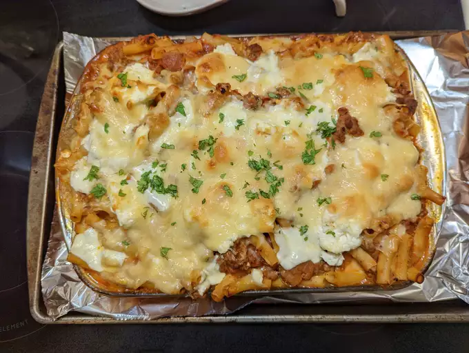

Baked Ziti

Description
This baked ziti recipe will make you shiver in sheer delight. With it's profound and robust flavor profile, the crowd will be begging for more.
Ingredients
- italian sausage
- olive oil
- onion
- oregano
- thyme
- rosemary
- marinara
- ziti
Directions
- cut sausage
- heat oil and cook sausage with seasonings
- add sauce and let simmer
- cook pasta and add to dish. Add the meat sauce.
- spread cheese and bake for 20 minutes.